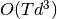
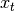
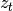
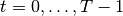
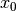
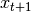

pykalman¶
Welcome to pykalman, the dead-simple Kalman Filter, Kalman Smoother, and EM library for Python:
>>> from pykalman import KalmanFilter
>>> import numpy as np
>>> kf = KalmanFilter(transition_matrices = [[1, 1], [0, 1]], observation_matrices = [[0.1, 0.5], [-0.3, 0.0]])
>>> measurements = np.asarray([[1,0], [0,0], [0,1]]) # 3 observations
>>> kf = kf.em(measurements, n_iter=5)
>>> (filtered_state_means, filtered_state_covariances) = kf.filter(measurements)
>>> (smoothed_state_means, smoothed_state_covariances) = kf.smooth(measurements)
Also included is support for missing measurements:
>>> from numpy import ma
>>> measurements = ma.asarray(measurements)
>>> measurements[1] = ma.masked # measurement at timestep 1 is unobserved
>>> kf = kf.em(measurements, n_iter=5)
>>> (filtered_state_means, filtered_state_covariances) = kf.filter(measurements)
>>> (smoothed_state_means, smoothed_state_covariances) = kf.smooth(measurements)
And for the non-linear dynamics via the UnscentedKalmanFilter:
>>> I'll fill this in someday...
Installation¶
For a quick installation:
$ easy_install pykalman
pykalman depends on the following modules,
- numpy (for core functionality)
- scipy (for core functionality)
- Sphinx (for generating documentation)
- numpydoc (for generating documentation)
- nose (for running tests)
All of these and pykalman can be installed using easy_install:
$ easy_install numpy scipy Sphinx numpydoc nose pykalman
Alternatively, you can get the latest and greatest from github:
$ git clone git@github.com:pykalman/pykalman.git pykalman
$ cd pykalman
$ sudo python setup.py install
User’s Guide¶
The Kalman Filter is a unsupervised algorithm for tracking a single object in a continuous state space. Given a sequence of noisy measurements, the Kalman Filter is able to recover the “true state” of the underling object being tracked. Common uses for the Kalman Filter include radar and sonar tracking and state estimation in robotics.
The advantages of Kalman Filter are:
- No need to provide labeled training data
- Ability to handle noisy observations
The disadvantages are:
- Computational complexity is cubic in the size of the state space
- Parameter optimization is non-convex and can thus only find local optima
- Inability to cope with non-Gaussian noise
Basic Usage¶
This module implements two algorithms for tracking: the Kalman Filter and Kalman Smoother. In addition, model parameters which are traditionally specified by hand can also be learned by the implemented EM algorithm without any labeled training data. All three algorithms are contained in the KalmanFilter class in this module.
In order to apply the Kalman Smoother, one need only specify the size of the state and observation space. This can be done directly by setting n_dim_state or n_dim_obs or indirectly by specifying an initial value for any of the model parameters from which the former can be derived:
>>> from pykalman import KalmanFilter
>>> kf = KalmanFilter(initial_state_mean=0, n_dim_obs=2)
The traditional Kalman Filter assumes that model parameters are known beforehand. The KalmanFilter class however can learn parameters using KalmanFilter.em() (fitting is optional). Then the hidden sequence of states can be predicted using KalmanFilter.smooth():
>>> measurements = [[1,0], [0,0], [0,1]]
>>> kf.em(measurements).smooth([[2,0], [2,1], [2,2]])
array([[ 0.85819709],
[ 1.77811829],
[ 2.19537816]])
The Kalman Filter is parameterized by 3 arrays for state transitions, 3 for measurements, and 2 more for initial conditions. Their names and function are described in the next section.
See also
- examples/standard/plot_sin.py
- Tracking a sine signal
Choosing Parameters¶
Unlike most other algorithms, the Kalman Filter and Kalman Smoother are traditionally used with parameters already given. The KalmanFilter class can thus be initialized with any subset of the usual model parameters and used without fitting. Sensible defaults values are given for all unspecified parameters (zeros for all 1-dimensional arrays and identity matrices for all 2-dimensional arrays).
A Kalman Filter/Smoother is fully specified by its initial conditions (initial_state_mean and initial_state_covariance), its transition parameters (transition_matrices, transition_offsets, transition_covariance), and its observation parameters (observation_matrices, observation_offsets, observation_covariance). These parameters define a probabilistic model from which the unobserved states and observed measurements are assumed to be sampled from. The following code illustrates in one dimension what this process is.
from scipy.stats import norm
import numpy as np
states = np.zeros((n_timesteps, n_dim_state))
measurements = np.zeros((n_timesteps, n_dim_obs))
for t in range(n_timesteps-1):
if t == 0:
states[t] = norm.rvs(initial_state_mean, np.sqrt(initial_state_covariance))
measurements[t] = (
np.dot(observation_matrices[t], states[t])
+ observation_offsets[t]
+ norm.rvs(0, np.sqrt(observation_covariance))
)
states[t+1] = (
np.dot(transition_matrices[t], states[t])
+ transition_offsets[t]
+ norm.rvs(0, np.sqrt(transition_covariance))
)
measurements[t+1] = (
np.dot(observation_matrices[t+1], states[t+1])
+ observation_offsets[t+1]
+ norm.rvs(np.sqrt(observation_covariance))
)
The selection of these variables is not an easy one, and, as shall be explained in the section on fitting, should not be left to KalmanFilter.em() alone. If one ignores the random noise, the parameters dictate that the next state and the current measurement should be an affine function of the current state. The additive noise term is then simply a way to deal with unaccounted error.
A simple example to illustrate the model parameters is a free falling ball in one dimension. The state vector can be represented by the position, velocity, and acceleration of the ball, and the transition matrix is defined by the equation:
position[t+dt] = position[t] + velocity[t] dt + 0.5 acceleration[t] dt^2
Taking the zeroth, first, and second derivative of the above equation with respect to dt gives the rows of transition matrix. We may also set the transition offset to zero for the position and velocity components and -9.8 for the acceleration component in order to account for gravity’s pull.
It is often very difficult to guess what appropriate values are for for the transition and observation covariance, so it is common to use some constant multiplied by the identity matrix. Increasing this constant is equivalent to saying you believe there is more noise in the system. This constant is the amount of variance you expect to see along each dimensiona during state transitions and measurements, respectively.
Inferring States¶
The KalmanFilter class comes equipped with two algorithms for prediction: the Kalman Filter and the Kalman Smoother. While the former can be updated recursively (making it ideal for online state estimation), the latter can only be done in batch. These two algorithms are accessible via KalmanFilter.filter(), KalmanFilter.filter_update(), and KalmanFilter.smooth().
Functionally, Kalman Smoother should always be preferred. Unlike the Kalman
Filter, the Smoother is able to incorporate “future” measurements as well as
past ones at the same computational cost of  where  is
the number of time steps and d is the dimensionality of the state space. The
only reason to prefer the Kalman Filter over the Smoother is in its ability to
incorporate new measurements in an online manner:
is
the number of time steps and d is the dimensionality of the state space. The
only reason to prefer the Kalman Filter over the Smoother is in its ability to
incorporate new measurements in an online manner:
>>> means, covariances = kf.filter(measurements)
>>> next_mean, next_covariance = kf.filter_update(
means[-1], covariances[-1], new_measurement
)
Both the Kalman Filter and Kalman Smoother are able to use parameters which vary with time. In order to use this, one need only pass in an array n_timesteps in length along its first axis:
>>> transition_offsets = [[-1], [0], [1], [2]]
>>> kf = KalmanFilter(transition_offsets=transition_offsets, n_dim_obs=1)
See also
- examples/standard/plot_online.py
- Online State Estimation
- examples/standard/plot_filter.py
- Filtering and Smoothing
Optimizing Parameters¶
In addition to the Kalman Filter and Kalman Smoother, the KalmanFilter class implements the Expectation-Maximization algorithm. This iterative algorithm is a way to maximize the likelihood of the observed measurements (recall the probabilistic model induced by the model parameters), which is unfortunately a non-convex optimization problem. This means that even when the EM algorithm converges, there is no guarantee that it has converged to an optimal value. Thus it is important to select good initial parameter values.
A second consideration when using the EM algorithm is that the algorithm lacks regularization, meaning that parameter values may diverge to infinity in order to make the measurements more likely. Thus it is important to choose which parameters to optimize via the em_vars parameter of KalmanFilter. For example, in order to only optimize the transition and observation covariance matrices, one may instantiate KalmanFilter like so:
>>> kf = KalmanFilter(em_vars=['transition_covariance', 'observation_covariance'])
It is customary optimize only the transition_covariance, observation_covariance, initial_state_mean, and initial_state_covariance, which is the default when em_vars is unspecified. In order to avoid overfitting, it is also possible to specify the number of iterations of the EM algorithm to run during fitting:
>>> kf.em(X, n_iter=5)
Each iteration of the EM algorithm requires running the Kalman Smoother anew,
so its computational complexity is  where is the
number of time steps, n is the number of iterations, and d is the size of
the state space.
where is the
number of time steps, n is the number of iterations, and d is the size of
the state space.
See also
- examples/standard/plot_em.py
- Using the EM Algorithm
Missing Measurements¶
In real world systems, it is common to have sensors occasionally fail. The Kalman Filter, Kalman Smoother, and EM algorithm are all equipped to handle this scenario. To make use of it, one only need apply a NumPy mask to the measurement at the missing time step:
>>> from numpy import ma
>>> X = ma.array([1,2,3])
>>> X[1] = ma.masked # hide measurement at time step 1
>>> kf.em(X).smooth(X)
See also
- examples/standard/plot_missing.py
- State Estimation with Missing Observations
Mathematical Formulation¶
In order to understand when the algorithms in this module will be effective, it is important to understand what assumptions are being made. To make notation concise, we refer to the hidden states as , the measurements as , and the parameters of the KalmanFilter class as follows,
Parameter Name Notation initial_state_mean initial_state_covariance transition_matrices transition_offsets transition_covariance observation_matrices observation_offsets observation_covariance
In words, the Linear-Gaussian model assumes that for all time steps  (here, is the number of time steps),
-  is distributed according to a Gaussian distribution
-  is an affine transformation of and additive Gaussian noise
 is an affine transformation of
is an affine transformation of  and additive
Gaussian noise
and additive
Gaussian noise
These assumptions imply that that is always a Gaussian
distribution, even when is observed. If this is the case, the
distribution of  and
and  are completely
specified by the parameters of the Gaussian distribution, namely its mean and
covariance. The Kalman Filter and Kalman Smoother calculate these values,
respectively.
are completely
specified by the parameters of the Gaussian distribution, namely its mean and
covariance. The Kalman Filter and Kalman Smoother calculate these values,
respectively.
Formally, the Linear-Gaussian Model assumes that states and measurements are generated in the following way,

The Gaussian distribution is characterized by its single mode and exponentially decreasing tails, meaning that the Kalman Filter and Kalman Smoother work best if one is able to guess fairly well the vicinity of the next state given the present, but cannot say exactly where it will be. On the other hand, these methods will fail if there are multiple, disconnected areas where the next state could be, such as if a car turns one of three ways at an intersection.
References:
- Abbeel, Pieter. “Maximum Likelihood, EM”. http://www.cs.berkeley.edu/~pabbeel/cs287-fa11/
- Yu, Byron M. and Shenoy, Krishna V. and Sahani, Maneesh. “Derivation of Kalman Filtering and Smoothing Equations”. http://www.ece.cmu.edu/~byronyu/papers/derive_ks.pdf
- Ghahramani, Zoubin and Hinton, Geoffrey E. “Parameter Estimation for Linear Dynamical Systems.” http://mlg.eng.cam.ac.uk/zoubin/course04/tr-96-2.pdf
- Welling, Max. “The Kalman Filter”. http://www.cs.toronto.edu/~welling/classnotes/papers_class/KF.ps.gz
Class Reference¶
KalmanFilter¶
- class pykalman.KalmanFilter(transition_matrices=None, observation_matrices=None, transition_covariance=None, observation_covariance=None, transition_offsets=None, observation_offsets=None, initial_state_mean=None, initial_state_covariance=None, random_state=None, em_vars=['transition_covariance', 'observation_covariance', 'initial_state_mean', 'initial_state_covariance'], n_dim_state=None, n_dim_obs=None)¶
Implements the Kalman Filter, Kalman Smoother, and EM algorithm.
This class implements the Kalman Filter, Kalman Smoother, and EM Algorithm for a Linear Gaussian model specified by,
The Kalman Filter is an algorithm designed to estimate . As all state transitions and observations are linear with Gaussian distributed noise, these distributions can be represented exactly as Gaussian distributions with mean filtered_state_means[t] and covariances filtered_state_covariances[t].
Similarly, the Kalman Smoother is an algorithm designed to estimate .
The EM algorithm aims to find for


If we define
 , then the EM algorithm works by iteratively finding,
, then the EM algorithm works by iteratively finding,
then by maximizing,
![\theta_{i+1} = \arg\max_{\theta}
\mathbb{E}_{x_{0:T-1}} [
L(x_{0:T-1}, \theta)| z_{0:T-1}, \theta_i
]](_images/math/f082e2288c736f7cb5f37186d1fb6084876311d8.png)
Parameters : transition_matrices : [n_timesteps-1, n_dim_state, n_dim_state] or [n_dim_state,n_dim_state] array-like
Also known as
 . state transition matrix between times t and
t+1 for t in [0...n_timesteps-2]
. state transition matrix between times t and
t+1 for t in [0...n_timesteps-2]observation_matrices : [n_timesteps, n_dim_obs, n_dim_obs] or [n_dim_obs, n_dim_obs] array-like
Also known as
 . observation matrix for times
[0...n_timesteps-1]
. observation matrix for times
[0...n_timesteps-1]transition_covariance : [n_dim_state, n_dim_state] array-like
Also known as
 . state transition covariance matrix for times
[0...n_timesteps-2]
. state transition covariance matrix for times
[0...n_timesteps-2]observation_covariance : [n_dim_obs, n_dim_obs] array-like
Also known as
 . observation covariance matrix for times
[0...n_timesteps-1]
. observation covariance matrix for times
[0...n_timesteps-1]transition_offsets : [n_timesteps-1, n_dim_state] or [n_dim_state] array-like
Also known as
 . state offsets for times [0...n_timesteps-2]
. state offsets for times [0...n_timesteps-2]observation_offsets : [n_timesteps, n_dim_obs] or [n_dim_obs] array-like
Also known as
 . observation offset for times
[0...n_timesteps-1]
. observation offset for times
[0...n_timesteps-1]initial_state_mean : [n_dim_state] array-like
Also known as
 . mean of initial state distribution
. mean of initial state distributioninitial_state_covariance : [n_dim_state, n_dim_state] array-like
Also known as
 . covariance of initial state
distribution
. covariance of initial state
distributionrandom_state : optional, numpy random state
random number generator used in sampling
em_vars : optional, subset of [‘transition_matrices’, ‘observation_matrices’, ‘transition_offsets’, ‘observation_offsets’, ‘transition_covariance’, ‘observation_covariance’, ‘initial_state_mean’, ‘initial_state_covariance’] or ‘all’
if em_vars is an iterable of strings only variables in em_vars will be estimated using EM. if em_vars == ‘all’, then all variables will be estimated.
n_dim_state: optional, integer :
the dimensionality of the state space. Only meaningful when you do not specify initial values for transition_matrices, transition_offsets, transition_covariance, initial_state_mean, or initial_state_covariance.
n_dim_obs: optional, integer :
the dimensionality of the observation space. Only meaningful when you do not specify initial values for observation_matrices, observation_offsets, or observation_covariance.
Methods
em(X[, y, n_iter, em_vars]) Apply the EM algorithm filter(X) Apply the Kalman Filter filter_update(filtered_state_mean, ...[, ...]) Update a Kalman Filter state estimate loglikelihood(X) Calculate the log likelihood of all observations sample(n_timesteps[, initial_state, ...]) Sample a state sequence timesteps in length. smooth(X) Apply the Kalman Smoother - em(X, y=None, n_iter=10, em_vars=None)¶
Apply the EM algorithm
Apply the EM algorithm to estimate all parameters specified by em_vars. Note that all variables estimated are assumed to be constant for all time. See _em() for details.
Parameters : X : [n_timesteps, n_dim_obs] array-like
observations corresponding to times [0...n_timesteps-1]. If X is a masked array and any of X[t]‘s components is masked, then X[t] will be treated as a missing observation.
n_iter : int, optional
number of EM iterations to perform
em_vars : iterable of strings or ‘all’
variables to perform EM over. Any variable not appearing here is left untouched.
- filter(X)¶
Apply the Kalman Filter
Apply the Kalman Filter to estimate the hidden state at time
 for
for ![t = [0...n_{\text{timesteps}}-1]](_images/math/6f7b86ed150ff57b9ae1aaebaaedb1fd871a134f.png) given observations up to
and including time t. Observations are assumed to correspond to
times . The output of this method
corresponding to time
given observations up to
and including time t. Observations are assumed to correspond to
times . The output of this method
corresponding to time  can be used in
KalmanFilter.filter_update() for online updating.
can be used in
KalmanFilter.filter_update() for online updating.Parameters : X : [n_timesteps, n_dim_obs] array-like
observations corresponding to times [0...n_timesteps-1]. If X is a masked array and any of X[t] is masked, then X[t] will be treated as a missing observation.
Returns : filtered_state_means : [n_timesteps, n_dim_state]
mean of hidden state distributions for times [0...n_timesteps-1] given observations up to and including the current time step
filtered_state_covariances : [n_timesteps, n_dim_state, n_dim_state] array
covariance matrix of hidden state distributions for times [0...n_timesteps-1] given observations up to and including the current time step
- filter_update(filtered_state_mean, filtered_state_covariance, observation=None, transition_matrix=None, transition_offset=None, transition_covariance=None, observation_matrix=None, observation_offset=None, observation_covariance=None)¶
Update a Kalman Filter state estimate
Perform a one-step update to estimate the state at time
 give an observation at time and the previous estimate for
time given observations from times . This
method is useful if one wants to track an object with streaming
observations.
give an observation at time and the previous estimate for
time given observations from times . This
method is useful if one wants to track an object with streaming
observations.Parameters : filtered_state_mean : [n_dim_state] array
mean estimate for state at time t given observations from times [1...t]
filtered_state_covariance : [n_dim_state, n_dim_state] array
covariance of estimate for state at time t given observations from times [1...t]
observation : [n_dim_obs] array or None
observation from time t+1. If observation is a masked array and any of observation‘s components are masked or if observation is None, then observation will be treated as a missing observation.
transition_matrix : optional, [n_dim_state, n_dim_state] array
state transition matrix from time t to t+1. If unspecified, self.transition_matrices will be used.
transition_offset : optional, [n_dim_state] array
state offset for transition from time t to t+1. If unspecified, self.transition_offset will be used.
transition_covariance : optional, [n_dim_state, n_dim_state] array
state transition covariance from time t to t+1. If unspecified, self.transition_covariance will be used.
observation_matrix : optional, [n_dim_obs, n_dim_state] array
observation matrix at time t+1. If unspecified, self.observation_matrices will be used.
observation_offset : optional, [n_dim_obs] array
observation offset at time t+1. If unspecified, self.observation_offset will be used.
observation_covariance : optional, [n_dim_obs, n_dim_obs] array
observation covariance at time t+1. If unspecified, self.observation_covariance will be used.
Returns : next_filtered_state_mean : [n_dim_state] array
mean estimate for state at time t+1 given observations from times [1...t+1]
next_filtered_state_covariance : [n_dim_state, n_dim_state] array
covariance of estimate for state at time t+1 given observations from times [1...t+1]
- loglikelihood(X)¶
Calculate the log likelihood of all observations
Parameters : X : [n_timesteps, n_dim_obs] array
observations for time steps [0...n_timesteps-1]
Returns : likelihood : float
likelihood of all observations
- sample(n_timesteps, initial_state=None, random_state=None)¶
Sample a state sequence timesteps in length.
Parameters : n_timesteps : int
number of timesteps
Returns : states : [n_timesteps, n_dim_state] array
hidden states corresponding to times [0...n_timesteps-1]
observations : [n_timesteps, n_dim_obs] array
observations corresponding to times [0...n_timesteps-1]
- smooth(X)¶
Apply the Kalman Smoother
Apply the Kalman Smoother to estimate the hidden state at time
for given all
observations. See _smooth() for more complex outputParameters : X : [n_timesteps, n_dim_obs] array-like
observations corresponding to times [0...n_timesteps-1]. If X is a masked array and any of X[t] is masked, then X[t] will be treated as a missing observation.
Returns : smoothed_state_means : [n_timesteps, n_dim_state]
mean of hidden state distributions for times [0...n_timesteps-1] given all observations
smoothed_state_covariances : [n_timesteps, n_dim_state]
covariances of hidden state distributions for times [0...n_timesteps-1] given all observations
UnscentedKalmanFilter¶
- class pykalman.UnscentedKalmanFilter(f, g, Q, R, mu_0, sigma_0, random_state=None)¶
Implements the General (aka Augmented) Unscented Kalman Filter governed by the following equations,

Notice that although the input noise to the state transition equation and the observation equation are both normally distributed, any non-linear transformation may be applied afterwards. This allows for greater generality, but at the expense of computational complexity. The complexity of UnscentedKalmanFilter.filter() is
 where is the number of time steps,
where is the number of time steps,  is the size of the
state space, and
is the size of the
state space, and  is the size of the observation space.
is the size of the observation space.If your noise is simply additive, consider using the AdditiveUnscentedKalmanFilter
Parameters : f : function or [T-1] array of functions
f[t] is a function of the state and the transition noise at time t and produces the state at time t+1
g : function or [T] array of functions
g[t] is a function of the state and the observation noise at time t and produces the observation at time t.
Q : [n_dim_state, n_dim_state] array
transition noise covariance matrix
R : [n_dim_obs, n_dim_obs] array
observation noise covariance matrix
mu_0 : [n_dim_state] array
mean of initial state distribution
sigma_0 : [n_dim_state, n_dim_state] array
covariance of initial state distribution
random_state : optional, int or RandomState
seed for random sample generation
Methods
filter(Z) Run Unscented Kalman Filter sample(T[, x_0]) Sample from model defined by the Unscented Kalman Filter smooth(Z) Run Unscented Kalman Smoother - filter(Z)¶
Run Unscented Kalman Filter
Parameters : Z : [T, n_dim_state] array
Z[t] = observation at time t. If Z is a masked array and any of Z[t]’s elements are masked, the observation is assumed missing and ignored.
Returns : mu_filt : [T, n_dim_state] array
mu_filt[t] = mean of state distribution at time t given observations from times [0, t]
sigma_filt : [T, n_dim_state, n_dim_state] array
sigma_filt[t] = covariance of state distribution at time t given observations from times [0, t]
- sample(T, x_0=None)¶
Sample from model defined by the Unscented Kalman Filter
Parameters : T : int
number of time steps
x_0 : optional, [n_dim_state] array
initial state. If unspecified, will be sampled from initial state distribution.
- smooth(Z)¶
Run Unscented Kalman Smoother
Parameters : Z : [T, n_dim_state] array
Z[t] = observation at time t. If Z is a masked array and any of Z[t]’s elements are masked, the observation is assumed missing and ignored.
Returns : mu_smooth : [T, n_dim_state] array
mu_filt[t] = mean of state distribution at time t given observations from times [0, T-1]
sigma_smooth : [T, n_dim_state, n_dim_state] array
sigma_filt[t] = covariance of state distribution at time t given observations from times [0, T-1]
AdditiveUnscentedKalmanFilter¶
- class pykalman.AdditiveUnscentedKalmanFilter(f, g, Q, R, mu_0, sigma_0, random_state=None)¶
Implements the Unscented Kalman Filter with additive noise. Observations are assumed to be generated from the following process,
While less general the general-noise Unscented Kalman Filter, the Additive version is more computationally efficient with complexity
 where is the number of time steps and is the size of
the state space.
where is the number of time steps and is the size of
the state space.Parameters : f : function or [T-1] array of functions
f[t] is a function of the state at time t and produces the state at time t+1
g : function or [T] array of functions
g[t] is a function of the state at time t and produces the observation at time t
Q : [n_dim_state, n_dim_state] array
transition noise covariance matrix
R : [n_dim_obs, n_dim_obs] array
observation noise covariance matrix
mu_0 : [n_dim_state] array
mean of initial state distribution
sigma_0 : [n_dim_state, n_dim_state] array
covariance of initial state distribution
random_state : optional, int or RandomState
seed for random sample generation
Methods
filter(Z) Run Unscented Kalman Filter sample(T[, x_0]) Sample from model defined by the Unscented Kalman Filter smooth(Z) Run Unscented Kalman Smoother - filter(Z)¶
Run Unscented Kalman Filter
Parameters : Z : [T, n_dim_state] array
Z[t] = observation at time t. If Z is a masked array and any of Z[t]’s elements are masked, the observation is assumed missing and ignored.
Returns : mu_filt : [T, n_dim_state] array
mu_filt[t] = mean of state distribution at time t given observations from times [0, t]
sigma_filt : [T, n_dim_state, n_dim_state] array
sigma_filt[t] = covariance of state distribution at time t given observations from times [0, t]
- sample(T, x_0=None)¶
Sample from model defined by the Unscented Kalman Filter
Parameters : T : int
number of time steps
x_0 : optional, [n_dim_state] array
initial state. If unspecified, will be sampled from initial state distribution.
- smooth(Z)¶
Run Unscented Kalman Smoother
Parameters : Z : [T, n_dim_state] array
Z[t] = observation at time t. If Z is a masked array and any of Z[t]’s elements are masked, the observation is assumed missing and ignored.
Returns : mu_smooth : [T, n_dim_state] array
mu_filt[t] = mean of state distribution at time t given observations from times [0, T-1]
sigma_smooth : [T, n_dim_state, n_dim_state] array
sigma_filt[t] = covariance of state distribution at time t given observations from times [0, T-1]